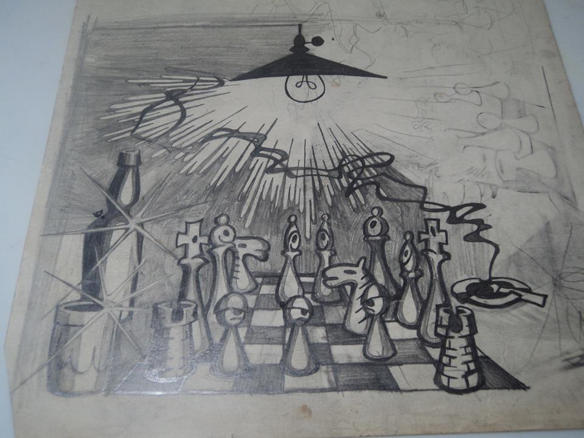

DE BICICLETA

A LÓGICA DO SISTEMA

“Organizações econômicas de grande complexidade, envolvendo uma elaborada divisão do trabalho, eram inteiramente operadas pelo mecanismo de armazenamento e redistribuição de mercadorias comuns, como o cereal “
. . .
“O próprio comércio, em seus primeiros tempos, tinha escassa motivação econômica e era mais freqüentemente uma atividade sagrada e cerimonial, relacionada com o parentesco e os costumes de família.“
. . .
“ Muitas sociedades arcaicas usaram o dinheiro, incluindo moedas metálicas, mas estas eram usadas para pagamento de impostos e salários, não para circulação geral. Normalmente não existia o objetivo de lucro individual em decorrência de atividades econômicas; a própria idéia de lucro, para não citar a de juros, era inconcebível ou banida.“
. . .
“ A propriedade privada só se justificava na medida em que servia ao bem-estar de todos. De fato, a palavra "privada" provém do latim "privare" ("despojar", "privar de"), o que mostra a antiga concepção de que a propriedade era, em primeiro lugar, comunal. Quando as sociedades passaram dessa visão comunal, de participação, para concepções mais individualistas e auto-afirmativas, as pessoas deixaram de considerar a propriedade privada um bem de que determinados indivíduos privavam o resto do grupo; de fato, o significado do termo foi invertido, a partir de então, ao se instituir que a propriedade devia ser privada, antes de mais nada, e que a sociedade não deveria privar o indivíduo disso sem o devido apoio da lei. “
. . .
( Fritjof Capra – O Ponto de Mutação)
Achei melhor começar essa história aqui porque na época em que essa história aconteceu, pensei comigo que seria um bom lugar para começar.
Queria que fosse um começo que tivesse um bom final.
Nunca tinha enraiado uma roda de bicicleta, mas acreditava naquela época, que tudo era uma questão de entender a lógica do sistema.
Observei uma roda enraiada, contei os raios, eram 36. A simetria ululante me induzia a presumir que tinham que ser 18 de cada lado do cilindro central e que, se 18 incidiam no cilindro de dentro para fora e 18 incidiam ao contrário, era evidente que de cada 18, seriam 9 de um jeito e 9 do outro. Então pronto, eram 4 grupos de 9 ( 9 X 4 = 36 ).
Se eram 4 tipos de 9 raios, tinham que ter 3 buracos no aro separando cada raio do mesmo tipo, era só ir contando, põe um e pula 3, põe um e pula 3, até por os 9, depois começa a pôr os 9 de outro tipo, se o anterior foi pra dentro, esse vai pra fora e pula até o próximo e assim por diante, até terminar a roda toda.
Pronto, já tinha entendido a lógica da “enraiação” e já tinha um plano.
Agora era colocar os raios em seus lugares e posições e depois apertar gradativamente, “um de cada vez e todos ao mesmo tempo”, pra não empenar a roda. Coloquei todos em seus lugares sem apertar de mais pra depois começar a apertar cada um, todos ao mesmo tempo.
Aí apertei um e comecei a pensar de outro jeito.
Meu pensamento começou a pulsar em outra velocidade de perceber, apareciam, sobrepunham, alternavam, misturavam-se cenas de diferentes filmes que eu tinha vivido, imaginado, pensado recentemente e ainda ecoavam em algum lugar da memória cujo acesso era, como de costume, estimulado pelas entidades da canabis que despertavam, manifestavam, combinavam, fundiam-se com a minha maneira de pensar.
Começou então, a ficar difícil manter aquela atenção concentrada nos cálculos da enraiação, meu pensamento tinha então, um tipo diferente de prestar atenção que não conseguia prestar atenção em uma coisa só, era um fluxo forte de muitas ideias ao mesmo tempo, a atenção era intensa, mas sem centro, um prestar atenção forte que não é concentração, é “semcentração”.
Aí resolvi sair pra andar na praia sem pressa e sem direção planejada, isso ajudava a lidar com as ideias daquele mundo sem pressa, ideias sem direção planejada, diferente daquelas ideias matemáticas, planejadas, previstas, equacionadas, calculadas da lógica dos raios da roda da bicicleta.
A praia estava vazia, lá longe tinha um urubu pousado na trave de futebol, às vezes imaginava como teria sido a praia na época dos índios, com certeza a água limpinha, não tinha tanta areia, devia ter muito mato, muito bicho.
Depois veio outro urubu e pousou na mesma trave do primeiro, pensei comigo, como quase sempre pensava, que o urubu foi um dos poucos animais que conseguiu continuar vivendo aqui, junto com o ser humano, mesmo assim de longe.
Depois veio mais um urubu e a partir daí, não é que não coubesse mais urubu, caber cabia mais um monte, mas começou a haver conflito, era como se o espaço que cada urubu ocupasse, fosse maior do que o espaço físico que seu corpo ocupava. Como se tivesse uma bolha invisível em volta de cada urubu que o fazia maior do que visivelmente é.
Os urubus continuavam se “acotovelando” por um lugar na trave, pra quem voa alto como urubu, dá pra ver que as traves de futebol são tipo um oásis, lugares ótimos e raros pra pousar, o homem ocupou o espaço urbano de um jeito que os bichos foram se afastando, só alguns conseguiram conviver com o homem, entre eles o urubu e vendo as coisas da ótica do urubu, a distância entre ele e os outros animais, principalmente o ser humano, é uma das coisas mais importantes a observar, da qual depende sua sobrevivência.
Parece uma coisa à toa, mas depois, quando estivesse pedalando na estrada e durante toda a vida, aquele filme dos urubus na trave reincidiria muitas vezes no meu pensamento.
Tinha ficado jogando xadrez com Zaratrustra na noite anterior e acordei depois do meio dia da madrugada, ele dizia que a gente não jogava xadrez, a gente jogava xadrez de rua.
Xadrez de rua é uma poderosa entidade do astral, é um culto ao poder do silêncio, uma conversa sem palavras entre bêbados que não perderam a dignidade e em cima dessa particularidade pensam com toda paciência a próxima jogada e pra isso, tem todo e mais um relativamente pouco ou muito tempo do mundo pra pensar, como se soubessem ou imaginassem saber que a primeira lei do Xadrez de Rua é que:
A pior coisa que você pode fazer com a jogada certa é jogá-la.
Aí ficavam lá os dois enxadristas, imóveis, pensando, pensando, pensando.
Zaratrustra sempre dizia que não é lei do xadrez, é mais um código de conduta dos enxadristas não acelerar o adversário, não atrapalhar sua concentração quando a vez não é sua e quando for a sua vez de jogar, respeitar o adversário e não demorar mais do que o razoável.
Dizia que o xadrez é um jogo muito antigo inventado por sábios alienígenas e ensinado aos seres humanos, era responsabilidade dos enxadristas respeitar o código de conduta dos primeiros enxadristas e manter os princípios éticos e nobres que sempre caracterizaram a comunidade.
Há 3 resultados possíveis numa partida de xadrez, ganha um, ganha o outro, ou empata, mas no xadrez de rua há muitos outros resultados possíveis.
Ainda estava lembrando da conversa de ontem na mesa de bar, Zaratrustra sempre falava umas coisas que eu achava que tinha entendido, ou que tinha entendido do meu jeito de entender, ele dizia que isso é assim mesmo, dizia que ele mesmo já não seria mais ele, eu não seria mais eu e essa história já não seria mais essa história, cada vez que fosse contada, ouvida, entendida, interpretada novamente.
Conheci Zaratrustra na faculdade, a gente era calouro de economia, ele já fazia Sociologia também há dois anos e agora resolvera fazer as duas ao mesmo tempo, não era do tipo que apenas parava a aula pra dizer que não tinha entendido, pegava as rédeas e conduzia a aula por caminhos tão mais criativos e interessantes que o próprio professor ficava sem jeito de interferir.
Lembro muito vivo, num lugar vago da memória de um dia em que Zaratrustra interrompeu a até então, monótona e sonolenta aula de Metodologia das Ciências Sociais do curso básico obrigatório de Economia pra falar alguma coisa que eu não entendi, mas percebi visivelmente que o professor considerou muito inteligente. Não só eu, mas outras pessoas da turma que estavam quase dormido, acordaram, a partir dali a aula ficou muito mais interessante , lembro que a aula tomou um caminho que a gente era obrigado a se perguntar se era por aí que o professor planejara, lembro de um momento em que ficou explícito de um jeito “cinematopoéticográficoexplícito”, pelo menos pra mim que sentia que a faculdade era o supra sumo da liberdade porque a gente podia ir pra aula sem uniforme, senti-me realizado quando vi o professor levantando a mão pra perguntar uma coisa, se Zaratrustra lhe desse a palavra.
Lembrei na imaginação as veias do tabuleiro da partida de xadrez de ontem, pequei o tabuleiro e refiz o jogo de memória.
Eu estava de pretas, a gente tinha igualdade material durante toda a partida, até chegar a um final de Peões onde depois das trocas, ficaram 3 e Peões o Rei, contra o Rei e a Torre, era fim de jogo, naquele cenário um Peão valia mais do que vale normalmente.
A palavra peão vem de pé e se não vem, deveria vir, diz respeito ao soldado que batalha a pé, ao contrário do cavaleiro, palavra que deu e se não deu, deveria ter dado origem à palavra cavalheiro, soldado da infantaria que batalha a cavalo.
O Peão só anda pra frente, um passo de cada vez, é a peça de menor valor do tabuleiro, que é dada mais facilmente em sacrifício, mas é a que tem mais poesia, é a única que pode se transformar no que quiser.
O peão e só o peão, tem uma trajetória irreversível em direção à casa de promoção, por isso cada passo deixa pra traz alguma casa fraca, e a cada passo que dá, chega mais perto da casa de promoção.
O peão passado tem sonhos, os peões do roque têm responsabilidade, os peões do centro têm planos.
Zaratrustra contara na noite anterior que tinha ido acampar com a namorada, armaram a barraca num lugar isolado. Na calada da noite, quando ele estava dormindo todo embrulhado dentro do saco de dormir como uma lagarta no casulo, apareceu um ladrão, quando acordou, o ladrão já estava dentro da barraca, por cima dele, ele estava com as mãos pra dentro do saco de dormir, como se estivessem amarradas, indefeso, aí então ele gritou, porque era a única arma que tinha e adiantou, o ladrão se assustou e fugiu. Não conseguiu dormir de novo, passou o resto da noite no tempo, de campana, imaginando sombras se mexendo no escuro.
Naquela noite sonhei que o mundo era liso, tinha poucas linhas separando uma coisa da outra, imenso pra todos os lados, redondo, mas de um tamanho tão grande, que não se via a redondeza, como esse mundo aqui, comecei a ouvir um som metálico que vinha de longe, de algum lugar pra lá do universo visível, depois da última curva do mundo, vinha um tipo de trem gigante, muito rápido, fazia um barulho metálico, ardido, amargo, sem cheiro, se é que algum barulho tem cheiro, que aumentava quando o trem se aproximava, mostrando que era muito pesado, passava perto de mim, quase me atropelava, ia embora e o barulho ia diminuindo, indo embora com ele e sumia na linha do horizonte, depois da última linha do mundo visível e do audível.
A sensação era confusa, era como se estivesse acordando de um sonho ou mergulhando em um.